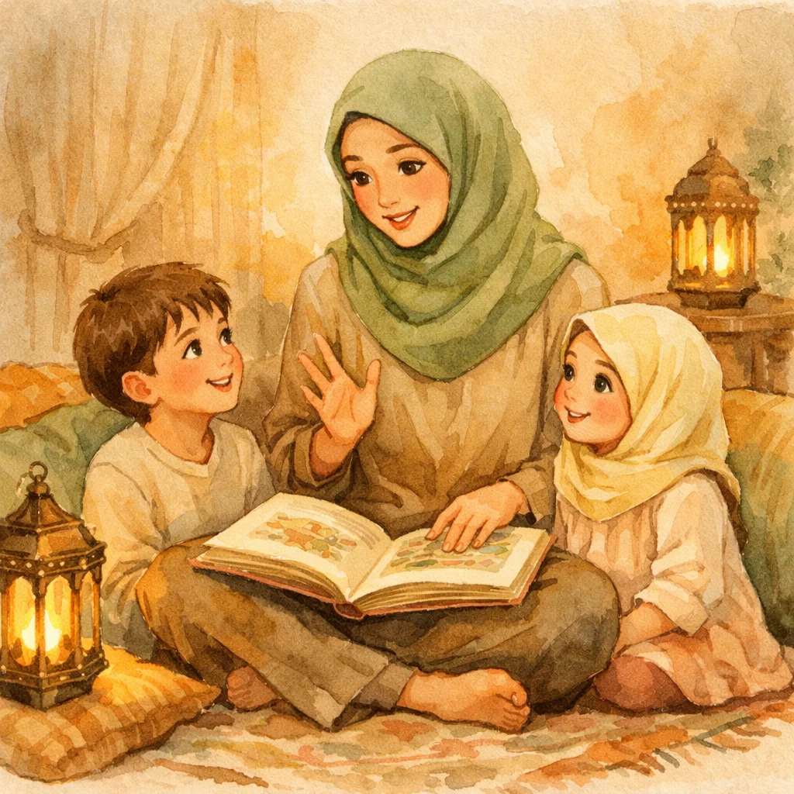
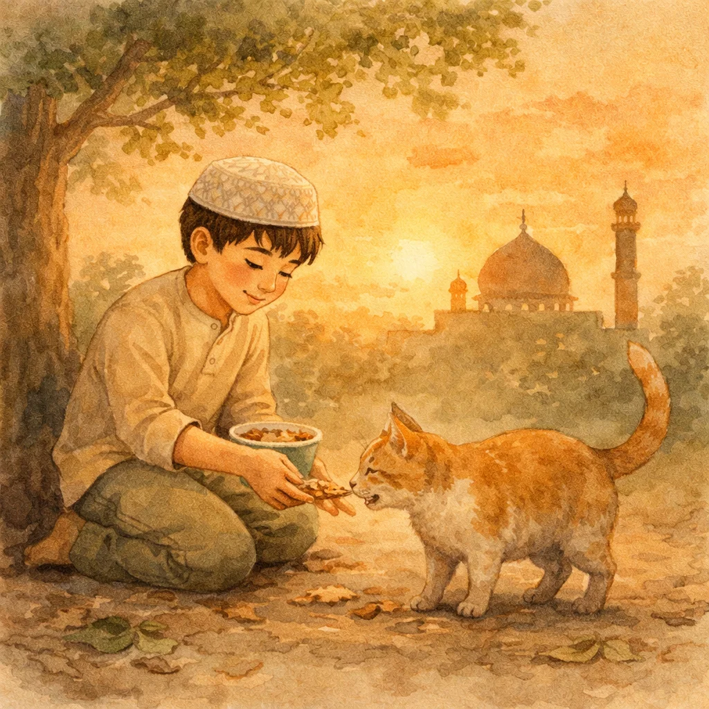

Short Islamic Stories for Kids: 10 Quick Tales with Powerful Moral Lessons
Not every night has time for a long story. Sometimes you need something short, true, and powerful — a two-minute tale that plants a seed in your child's heart. These short Islamic stories for kids are exactly that. Real stories from Islamic history, retold for little ears.

📖 Want your kids to hear these stories with beautiful illustrations?
Explore Islamic Stories for Kids →Let's be honest. Some nights you're exhausted. The kids are wired. You've got maybe three minutes before someone starts a pillow fight. You don't need a 20-minute epic. You need a short Islamic story that lands fast and sticks.
Good news: Islamic history is packed with these moments. Quick, true stories with clear moral lessons that kids understand instantly. No long setup. No complicated backstory. Just the heart of the story and the lesson it carries.
Here are 10 of the best short Islamic stories for kids — each one true, each one powerful, and each one short enough for even the busiest nights. (Looking for longer stories? Check out our complete guide to Islamic stories for kids.)
1. The Prophet and the Thirsty Dog
A man was walking through the desert, dying of thirst. He found a well, climbed down, drank his fill, and climbed back out. At the top, he saw a dog panting and licking the wet sand, desperate for water.
The man thought: "This dog is as thirsty as I was." So he climbed back down into the well, filled his shoe with water, held it in his mouth as he climbed back up, and gave the dog a drink.
Prophet Muhammad (ﷺ) told his companions: "Allah was grateful to him and forgave him his sins."
The companions asked, "O Messenger of Allah, is there reward for us in serving animals?" He replied: "There is reward for serving every living being." (Sahih Bukhari)
💚 The Lesson
Kindness to any living creature matters to Allah. Even a small act of mercy — even giving water to a stray dog — can earn Allah's forgiveness.
2. Bilal's Unbreakable Faith
Bilal (RA) was an enslaved man in Makkah who became one of the first Muslims. When his master found out, he was furious. He would drag Bilal out into the burning desert sand at midday, place a massive boulder on his chest, and say: "Deny Muhammad's God."
Bilal, crushed under the rock with the sun blazing on his face, would only say one word: "Ahad. Ahad." — "One. One." Meaning: there is only One God.
No matter how much they tortured him, he never gave up. Abu Bakr eventually bought his freedom. And Bilal became the first muezzin — the first person ever to call the adhan for prayer.
💚 The Lesson
Real strength isn't physical. It's holding on to what you believe, even when it's hard. Bilal had nothing — no money, no power, no freedom — but he had faith. And that was everything.
3. The Woman Who Threw Garbage
Every day, a woman in Makkah would throw garbage and thorns on the Prophet Muhammad (ﷺ) as he walked past her house. Every single day. And every day, he would quietly clean himself off and keep walking. He never yelled. He never said a harsh word back.
One day, there was no garbage. No thorns. The path was clean. Instead of feeling relieved, the Prophet got worried. He asked about her and found out she was sick in bed.
So what did he do? He went to visit her. To check on her. To make sure she was okay. The woman was so shocked by his kindness that her heart softened completely.
💚 The Lesson
Being kind to people who are unkind to you is one of the hardest things. But it's also one of the most powerful. Kindness wins hearts that arguments never could.
4. Umar's Night Patrol
Umar ibn al-Khattab (RA) was the Caliph — the leader of the entire Muslim world. He ruled a vast empire. But at night, he would disguise himself and walk through the streets of Madinah to check on his people.
One night, he heard children crying in a tent. He went inside and found a woman boiling stones in a pot of water. She was pretending to cook food to calm her hungry children.
Umar's eyes filled with tears. He ran back to the storehouse himself, loaded a sack of flour and food on his own back, and carried it to the family. His servant offered to carry it for him. Umar said: "Will you carry my sins for me on the Day of Judgment too?"
He sat with the family, cooked the food himself, and didn't leave until the children were full and laughing.
💚 The Lesson
A real leader serves the people, not the other way around. Umar was the most powerful man in the Muslim world, and he carried flour on his back for a hungry family. That's what responsibility looks like.
5. Abu Bakr Gives Everything
When the Muslims needed money to prepare for an important expedition, the Prophet (ﷺ) asked everyone to donate what they could.
Umar (RA) thought: "Today I'll beat Abu Bakr." He went home and brought half of everything he owned. A huge donation. He was proud.
Then Abu Bakr (RA) came. The Prophet asked him, "What did you leave for your family?" Abu Bakr smiled and said: "Allah and His Messenger."
He had brought everything. Every single coin. His trust in Allah was so complete that he knew Allah would take care of his family.
Umar said later: "I could never surpass Abu Bakr in anything."
💚 The Lesson
True generosity isn't about how much you have — it's about how much you trust. Abu Bakr gave everything because he believed, deep in his bones, that Allah would provide. That's the kind of trust that moves mountains.

6. The Boy and the King
This true story from Surah Al-Buruj tells of a boy who learned about Allah from a monk in secret. The boy could heal the sick by the permission of Allah, and people began to believe.
The king, who claimed to be god, was furious. He tried to kill the boy three times. Threw him off a mountain — he survived. Tried to drown him in the sea — he survived. Nothing worked.
Finally, the boy told the king: "You will not be able to kill me until you say 'In the name of Allah, the Lord of the boy' and shoot an arrow at me." The king did exactly that, and the boy died.
But here's what happened next: all the people who witnessed it said, "We believe in the Lord of the boy!" The boy's sacrifice brought an entire nation to faith.
💚 The Lesson
Sometimes the bravest thing is to stand for truth, even when it costs everything. The boy's courage changed an entire people. One person with faith can change the world.
7. The Prophet's Kindness to Children
A man once saw the Prophet Muhammad (ﷺ) kissing his grandson Hasan. The man scoffed: "I have ten children and I've never kissed any of them."
The Prophet looked at him and said: "What can I do for you if Allah has removed mercy from your heart?" (Sahih Bukhari)
The Prophet would let his grandchildren climb on his back during prayer. He once extended his prostration because little Hasan was sitting on his back and he didn't want to disturb him. He shortened prayers when he heard a baby crying so the mother wouldn't worry.
💚 The Lesson
Being gentle with children isn't weakness — it's one of the highest forms of strength. The greatest man who ever lived made time, every time, for the little ones around him.
8. Anas and the Ten Years
Anas ibn Malik (RA) served Prophet Muhammad (ﷺ) from the age of 10. He was basically a kid doing chores for the Prophet. For ten full years.
Years later, Anas said: "I served the Prophet for ten years. He never once said 'uff' to me. He never said 'why did you do this?' or 'why didn't you do that?'" (Sahih Muslim)
Think about that. Ten years. A kid making mistakes, forgetting things, doing things wrong. And the Prophet never lost patience. Not even once.
💚 The Lesson
Patience with children — real patience, not just holding back your frustration — is a sunnah. The Prophet showed us what it looks like to be endlessly gentle with young people, even when they mess up.
9. The Three Men in the Cave
Three men were traveling when a storm forced them into a cave. A massive boulder rolled down and sealed the entrance. They were trapped. No one could hear them. No one was coming to help.
So each of them prayed to Allah by mentioning their most sincere good deed.
The first man had served his elderly parents their milk every night, even when they fell asleep and he had to wait for hours, standing, holding the cup. The boulder moved a little.
The second man had been alone with a woman he loved, but he walked away because he feared Allah. The boulder moved more.
The third man had invested a worker's unpaid wages and grown them into a fortune, then gave it all to the worker — cows, sheep, and camels — when the worker returned years later. The boulder moved completely, and they walked out free. (Sahih Bukhari)
💚 The Lesson
Good deeds done sincerely for Allah never go to waste. Even years later, they can save you. The kindness you show your parents, the honesty you maintain, the fairness you give others — it all matters, and Allah remembers every bit of it.
10. Salman's Long Journey to Islam
Salman al-Farisi (RA) was born in Persia — far, far away from Arabia. His family were fire-worshippers. But something inside him knew there had to be more. There had to be truth.
He left home and traveled from teacher to teacher. Each dying monk would send him to the next one in a different land. "Go to this person. He knows more." Salman kept going.
Along the way, he was betrayed and sold into slavery. But he never stopped searching. Eventually, after years of slavery, hardship, and travel across the entire known world, he reached Madinah and met the Prophet Muhammad (ﷺ). He tested the signs the monks had told him about — and every single one was true.
Salman had finally found what he'd been searching for his whole life.
💚 The Lesson
When you sincerely search for truth, Allah will guide you to it — no matter how far you have to travel or how long it takes. Salman crossed the entire world. Allah didn't let him down.
How to Use These Short Stories
The beauty of short Islamic stories is their flexibility. Here's how to make the most of them:
Quick Bedtime Stories
Pick one story per night. Tell it in your own words. Don't read it — tell it. Look at your child, use your voice, make it alive. Two minutes is enough. Then ask: "What did you learn?" Let them answer. That's it. Done. Powerful. (For more bedtime story ideas, see our 7 beautiful Quran stories for bedtime.)
Car Ride Stories
Long drives are perfect for stories. No screens, no distractions. Tell one story and then ask, "What would you have done?" Let them think. Let them argue. That's where the real learning happens.
Teaching Moments
When your child is struggling with something — sharing, patience, honesty — pull out the matching story. "You know, there was a man who..." Stories teach without lecturing. Kids listen to stories when they tune out advice.
Ramadan and Eid Specials
During Ramadan, tell one story each night after iftar. By the end of the month, your child will know 30 stories from Islamic history. That's a Ramadan tradition they'll remember forever. (Need more Ramadan ideas? Here are 15 ways to make Ramadan special for kids.)
Repeat the Favorites
Kids will ask for the same story 47 times. That's not boring — that's learning. Each time they hear it, another layer sinks in. The tenth time they hear about Bilal saying "Ahad," it's not just a story anymore. It's part of who they are.
Why True Stories Hit Harder
There's a reason we chose islamic true stories for kids over made-up tales. Kids can tell the difference. When you say, "This really happened," their eyes widen differently. Their attention sharpens.
These aren't fairy tales. Bilal really was tortured. Umar really did carry flour on his back. The Prophet really did visit the woman who threw garbage at him. When kids know these stories are true, the lessons land deeper. These aren't characters in a book. They're real people who made real choices.
And that's the magic of islamic moral stories for children. The moral isn't tacked on at the end like a cartoon. It's woven into real events. The lesson emerges naturally from what actually happened. Kids don't feel preached at. They feel inspired.
For deeper dives into prophet stories specifically, our guide to prophet stories for kids covers 10 inspiring tales every Muslim child should know.
Start Tonight
You don't need to prepare. You don't need a special book. You don't need to memorize anything word-for-word. Just pick one story from this list, tell it in your own words, and watch your child's face.
That moment — the wide eyes, the "tell me another one!" — that's when faith starts growing. Not in a classroom. Not from a lecture. In the warmth of a story shared between parent and child.
These short Islamic stories have been changing hearts for 1,400 years. Tonight, they can start changing your child's.
🌙 Want even more stories — with beautiful illustrations?
Islamic Stories for Kids brings Quran stories to life with stunning artwork your children will love.
Discover the App →Frequently Asked Questions
What are good short Islamic stories for kids?▾
Great short Islamic stories include the Prophet Muhammad's kindness to his unkind neighbor, Bilal's unbreakable faith, Umar ibn al-Khattab's night patrol, the boy and the king from Surah Al-Buruj, and Abu Bakr's selfless generosity. These stories are true, short enough for bedtime, and each carries a clear moral lesson kids can understand.
How long should Islamic stories be for young children?▾
For children under 5, keep stories to 2-3 minutes — just the key scene and one clear lesson. For ages 5-8, stretch to 5-7 minutes with more detail. Older kids (8+) can handle 10-15 minute stories with discussion. Stop while they're still engaged, not after they've zoned out.
Are these Islamic stories true?▾
Yes! These stories come from authentic Islamic sources — the Quran, Sahih Bukhari, Sahih Muslim, and documented Islamic history. They're real events that happened to real people, which makes them even more powerful for children than fictional tales.
How do I make Islamic moral stories stick with my children?▾
Three things: repetition, connection, and practice. Tell the same story multiple times (kids love this). Connect it to their daily life ("Remember Bilal's strength? You were strong like that today!"). Create small actions — after the generosity story, let them give something to someone. Living the lesson cements it.
What moral lessons do Islamic stories teach children?▾
Islamic stories teach kindness (even to those who are unkind), patience during hardship, generosity, honesty, courage to stand for truth, trust in Allah, forgiveness, humility, and caring for all living things. Each story carries its lesson naturally — no preaching needed.